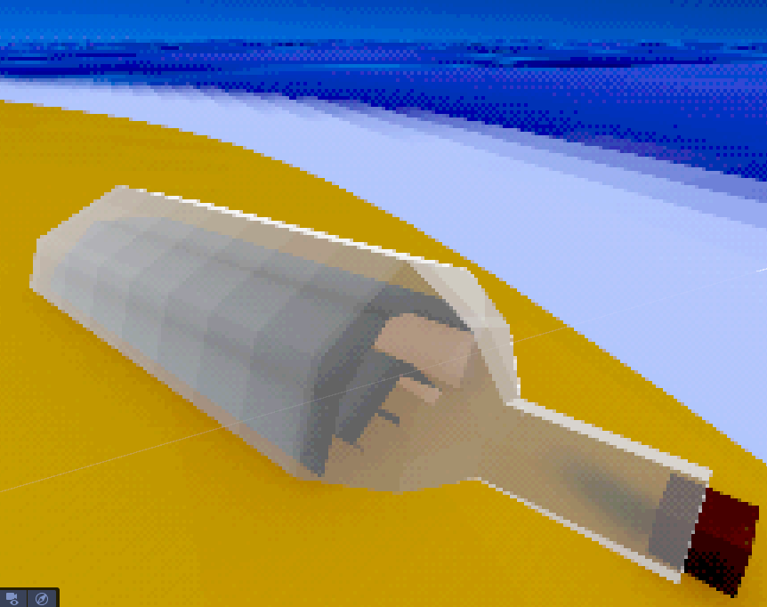
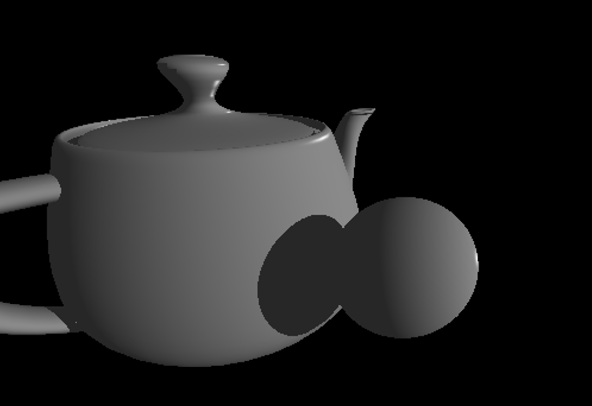
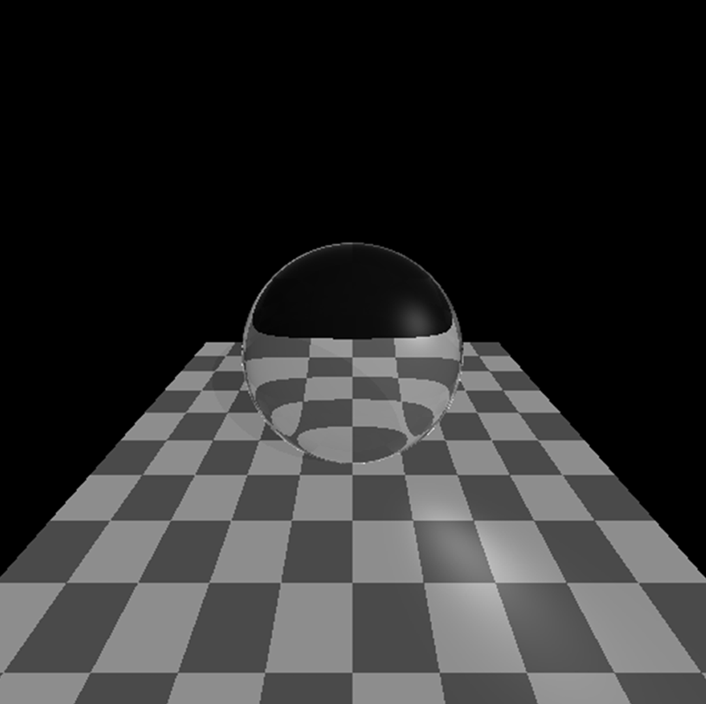
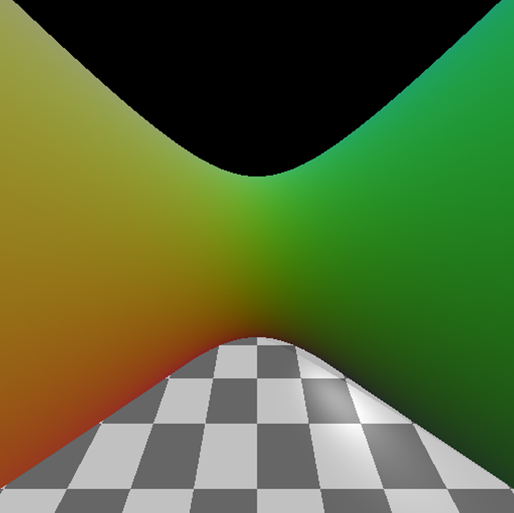

Rendering & Machine Learning
Jay Hilton
Computer Science & Mathematics MComp at Bath
Untitled Game
Exploration game · Unity 6 URP · HLSL
A first-person exploration game set in low-poly, liminal island spaces — part procedurally generated, part placed by hand. The point isn't realism; it's a specific, off-kilter mood.
Its entire look is hand-written HLSL. An ordered-dither and colour-quantisation pass runs over URP's Full Screen Pass feature to give the image its grainy, dream-logic feel.
Custom water with depth-based shoreline foam, Perlin wave motion, faceted specular and Fresnel; and a screen-space "painting" trick that hides teleports by freezing the camera's view-projection matrix, so a jump between spaces is impossible to see.
In active development.

CPU Ray Tracer
Written from scratch · C++ · no graphics libraries

A CPU ray tracer built from the ground up in C++ - no engine, no graphics libraries. It handles ray–triangle intersection, reflection and refraction, hard shadows, specular highlights, fresnel term, texturing, and intersection with implicit mathematical surfaces.
Source is private — code and write-up available on request.

